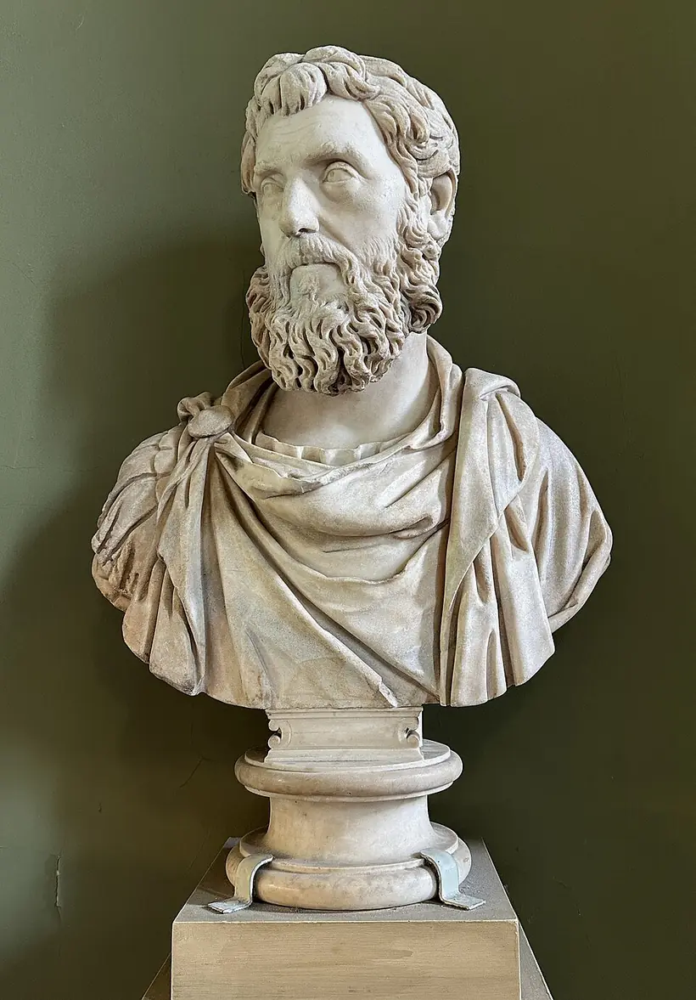

The story
Suetonius reports that Caligula intended to make his horse Incitatus a consul, and that he gave the animal a marble stable, a jewelled collar and its own household. The story has become the standard example of imperial madness.
Maps, diagrams and images



The problems
Suetonius wrote eighty years later and collected gossip; his biographies of the Caesars are notoriously hostile and anecdotal. The 'consulship for a horse' may be a satirical reading of a private remark — the emperor's habit of teasing the senate by proposing absurd candidates — and no official record supports an appointment.
The horse was real, and may have been a favoured racehorse; the consulship is the part that rests on a hostile anecdote.
Documented: the source, and its character.
Documented: Caligula's conflict with the senate.
Not documented: any actual appointment.
Plausible: a joke or a threat taken literally.
The honest label: live debate.
Why it is in the archive
Because it is the classic case of an anecdote outliving its source, and because the source is a hostile gossip.
Open resources on this topic
- PapersOpen-access articles: DOAJ · PubMed Central · Internet Archive Scholar
- BooksPublic-domain and borrowable copies: Open Library · Project Gutenberg · Google Books · Internet Archive
Cite this page
Momin, S. (2026). Caligula's Horse. The Larger World Archive. https://drsamonline.github.io/LARGE_GLOBE/caligula-horse.htmlMomin, Sohil. “Caligula's Horse.” The Larger World Archive, 2026, https://drsamonline.github.io/LARGE_GLOBE/caligula-horse.html.Momin, Sohil. “Caligula's Horse.” The Larger World Archive, 2026. https://drsamonline.github.io/LARGE_GLOBE/caligula-horse.html.@misc{caligulas2026caligula,
author = {Momin, Sohil},
title = {Caligula's Horse},
year = {2026},
howpublished = {The Larger World Archive},
url = {https://drsamonline.github.io/LARGE_GLOBE/caligula-horse.html},
note = {Last reviewed 20 November 2026}
}Last reviewed 20 November 2026 · Corrections policy · this page is not peer reviewed
Sources for this page
- Wikipedia, “Caligula” — the emperor and the anecdotesen.wikipedia.org
- Wikipedia, “Suetonius” — the sourceen.wikipedia.org
- Wikipedia, “Incitatus” — the horseen.wikipedia.org
- Wikipedia, “Roman consul” — the officeen.wikipedia.org